The Hibernation Pods
- Pristine Views
- Fully Heated
- Comfortable
- Quiet
 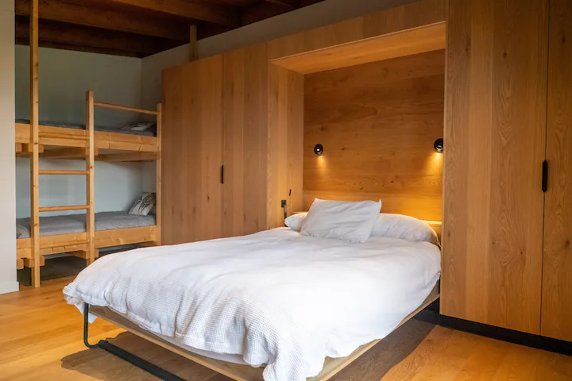
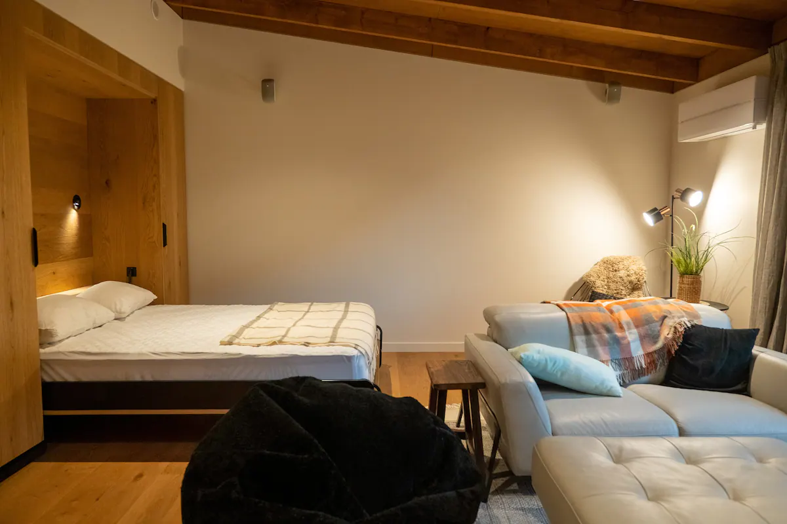
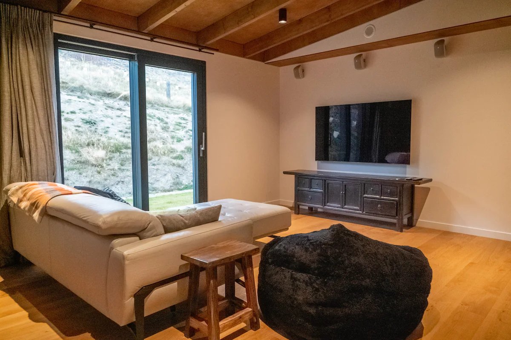
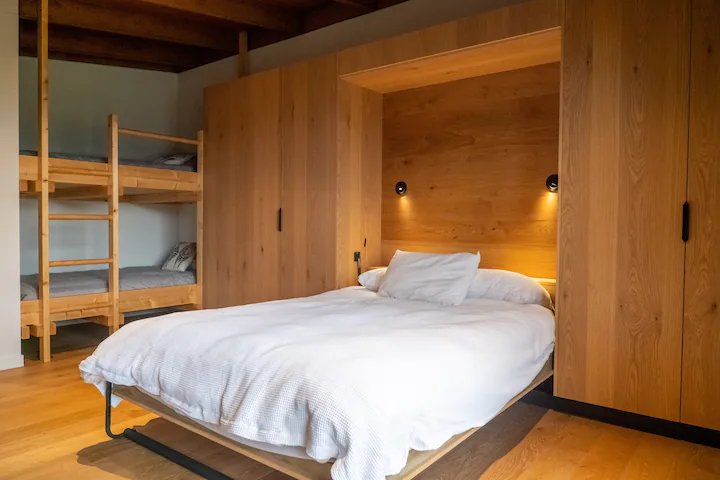
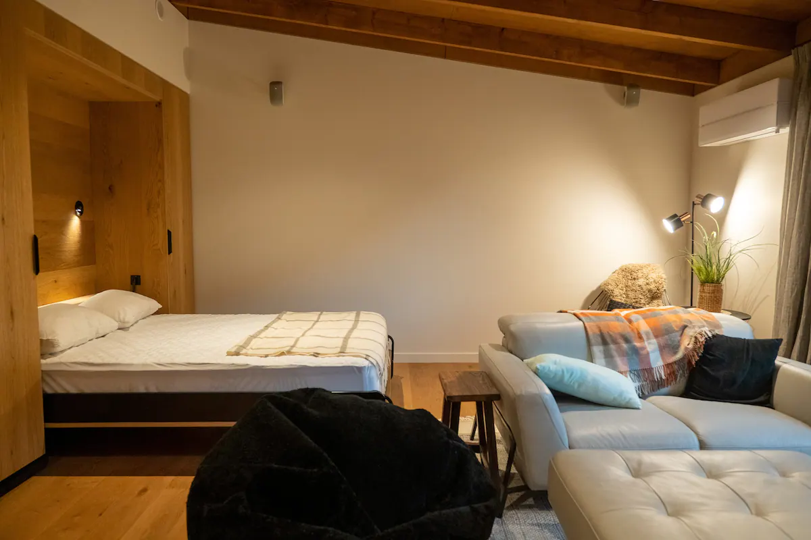
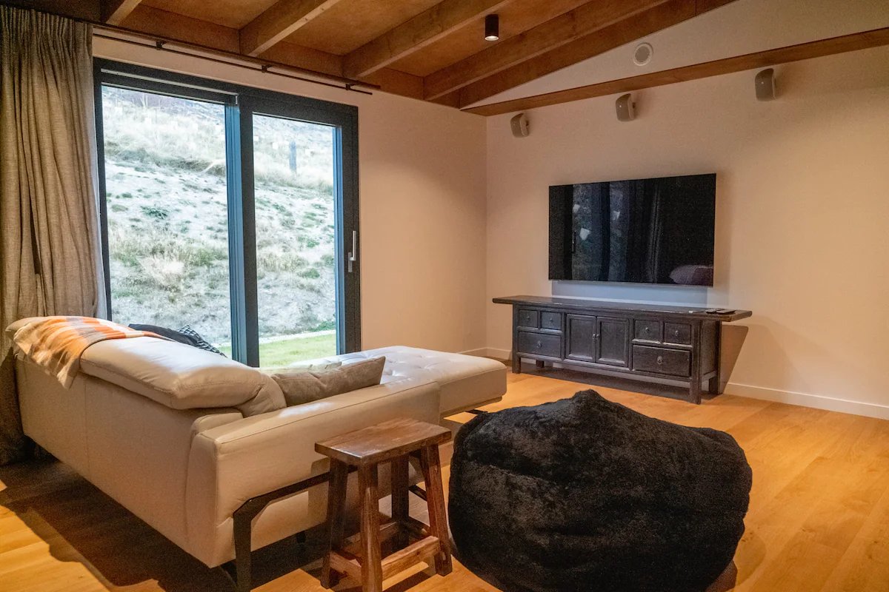
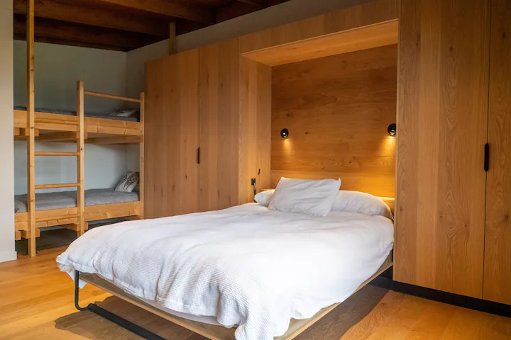
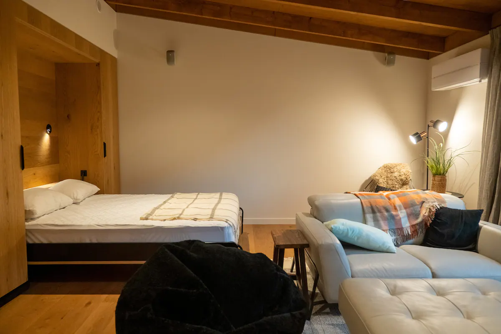
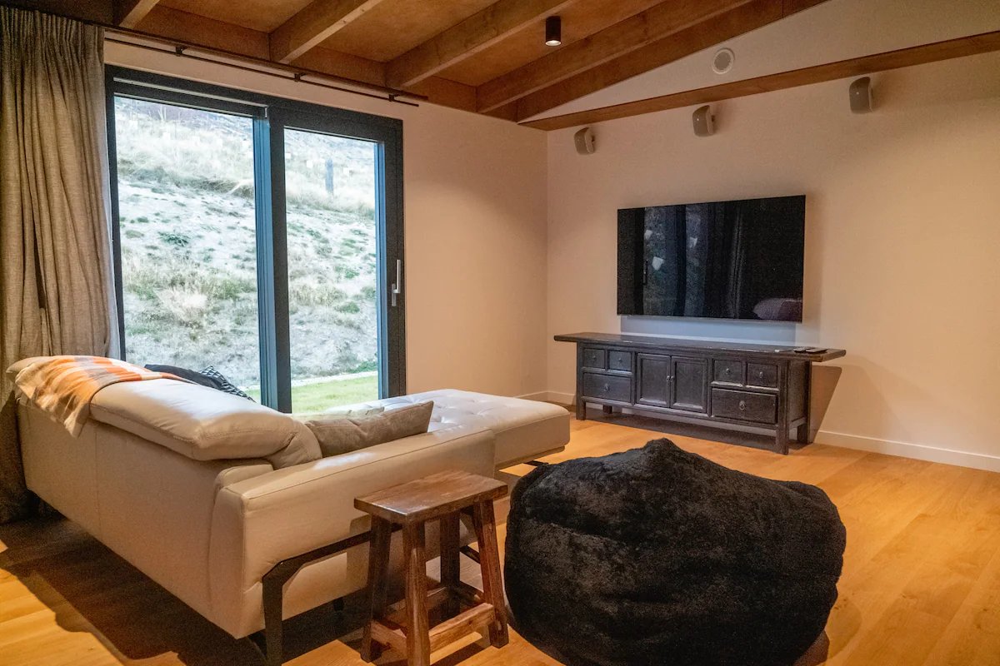
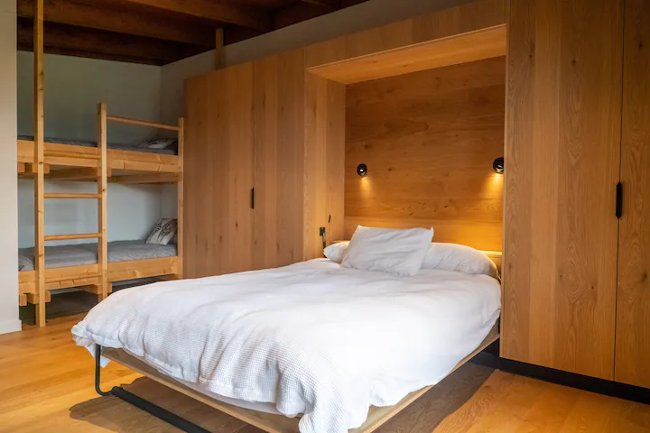
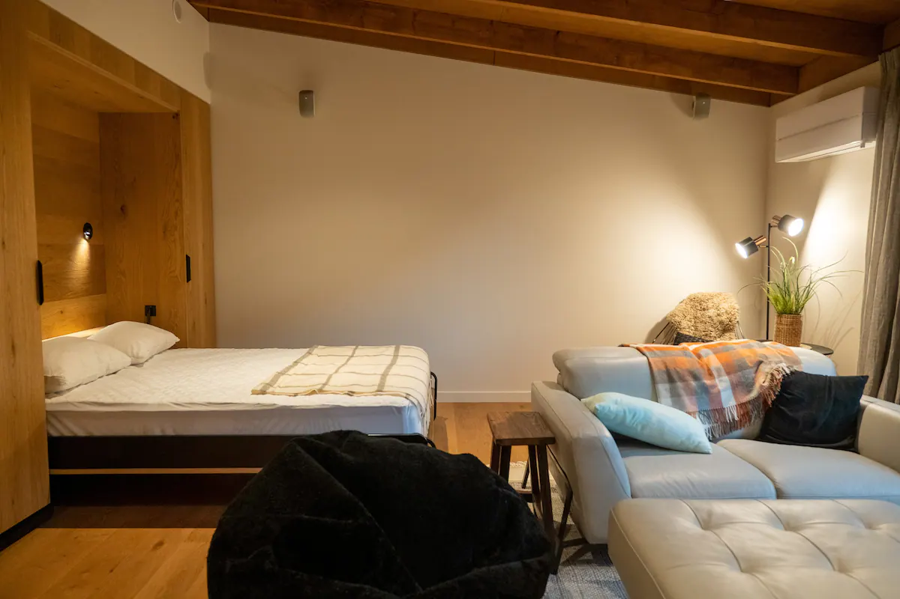
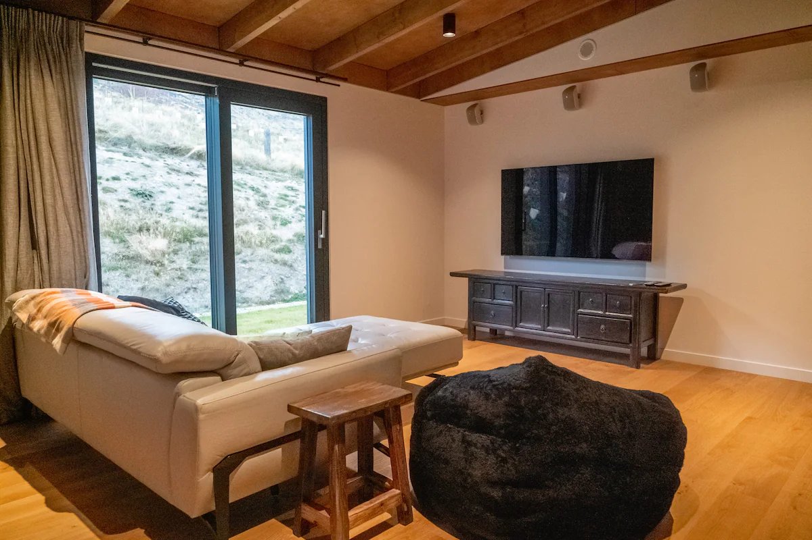

Find yourself at home in the stunning landscapes of the Queenstown Lakes. This architecturally designed luxury vacation rental near Wanaka was completed in 2022. A certified Passive House the compact property looks out over the beautiful lake Wanaka and surrounding snow-capped mountains.
Occupying a prime spot on this 50 acre lakeside farm, use the spacious private grounds and four bedrooms as the setting for a quiet family reunion or simply as a base to explore the regions ski resorts, renowned hikes and world-famous vineyards.
Set at the end of a winding gravel road, the farmhouse is surrounded by tussocks. The single level dwelling opens onto a wrap around deck, connecting with a schist flagstone patio featuring al-fresco sitting and dining areas. The hot tub nestles into the patio with jaw dropping views across the lake while you can ease weary legs from a day adventuring in the hills.